Match scoring
Track points, games, sets, match progress, serve indicator, and final results from Apple Watch.
Apple Watch scoring for tennis and pickleball
Score matches from your wrist, track practice sessions, and review every activity on iPhone with clean stats, heart-rate context, and match history that stays out of your way while you play.
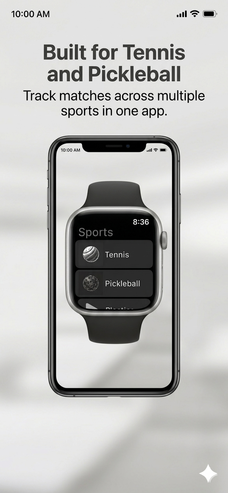
SporTrax keeps the phone in your bag during play. Start from Apple Watch, score quickly, fix mistakes with undo, and review the full story later on iPhone.
Track points, games, sets, match progress, serve indicator, and final results from Apple Watch.
Use focused scoring flows for both sports, with screens designed for fast glances between points.
Log sessions when you are drilling, rallying, or just hitting around without a formal match.
Play no-serve training games like Tug of War and save the result to your activity history.
Review heart-rate zones, calories, and time played when Apple Health permissions are enabled.
Large controls, clear scores, and fast correction make SporTrax practical mid-match. Apple Watch handles the live session, then iPhone gives you the deeper review.
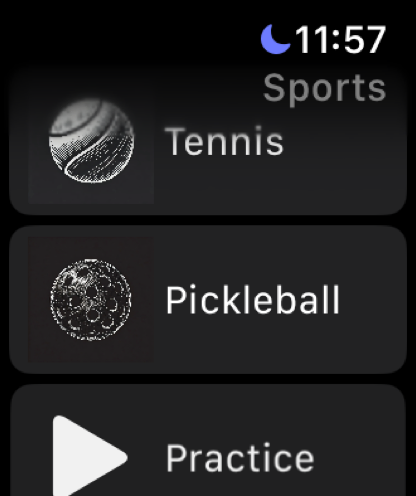

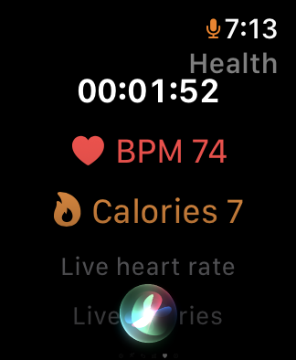
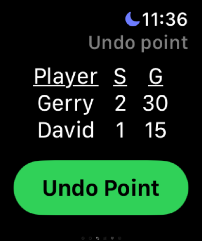
Mini games for training days
Tug of War is a fast Apple Watch mini game for rallies, drills, and competitive hitting sessions. It is great when you want points to matter but do not want the session to revolve around serving.
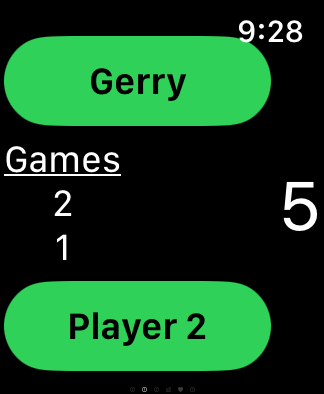
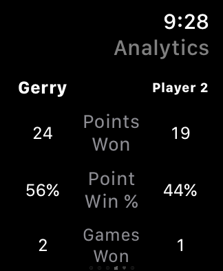
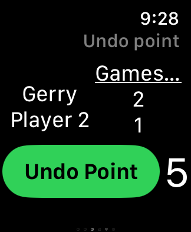
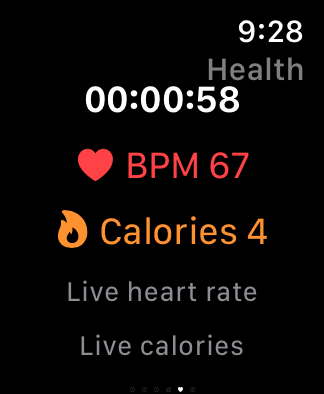

Tug of War sessions appear in iPhone history with details, duration, score movement, and activity context.
After play, the iPhone app gives you summaries, match details, practice logs, and activity history so every session is easy to revisit.
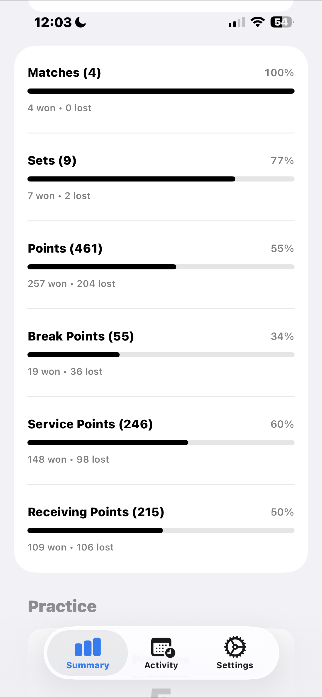
Review totals, win rates, and time played across your tennis activity.
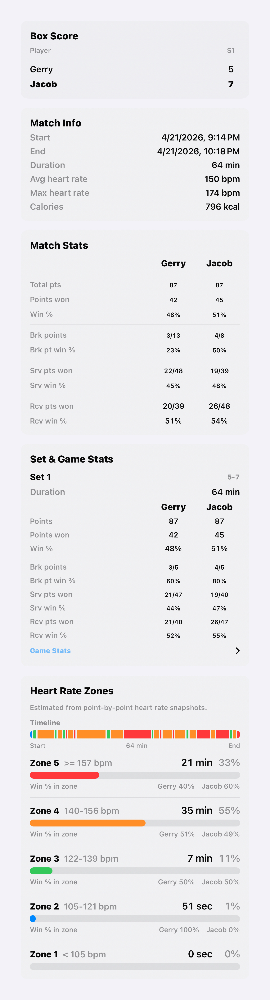
See box score, set-by-set results, service stats, receiving stats, and break points.
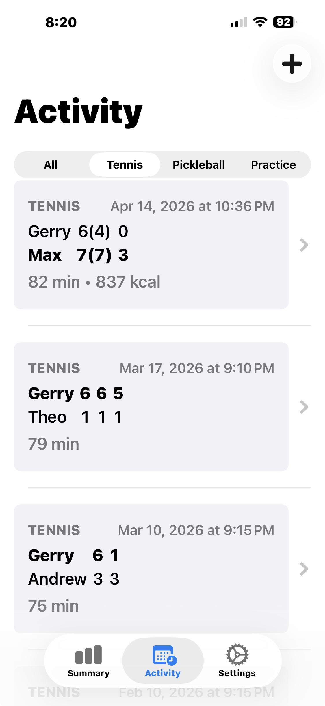
Keep matches and practices organized in one chronological view.
The latest release adds stronger tennis and pickleball presentation, practice tracking, heart-rate zone views, and shareable activity history.
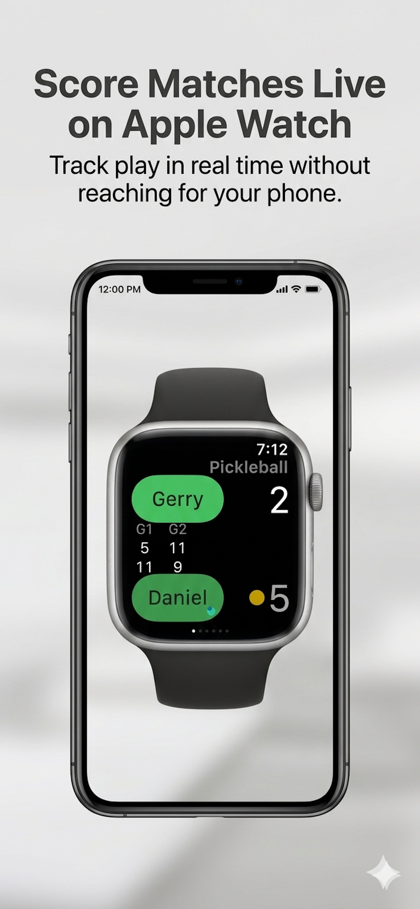
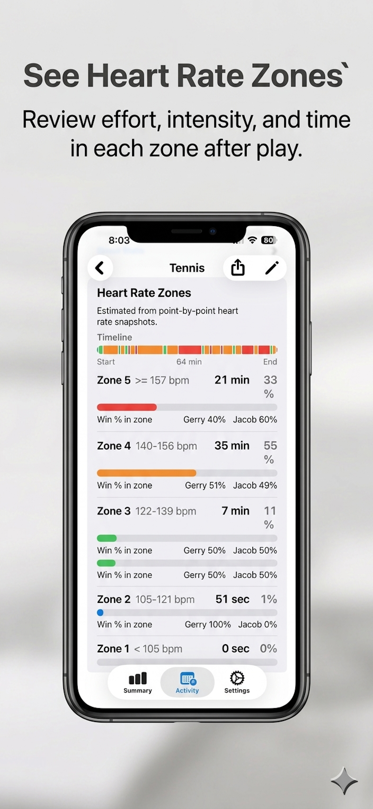
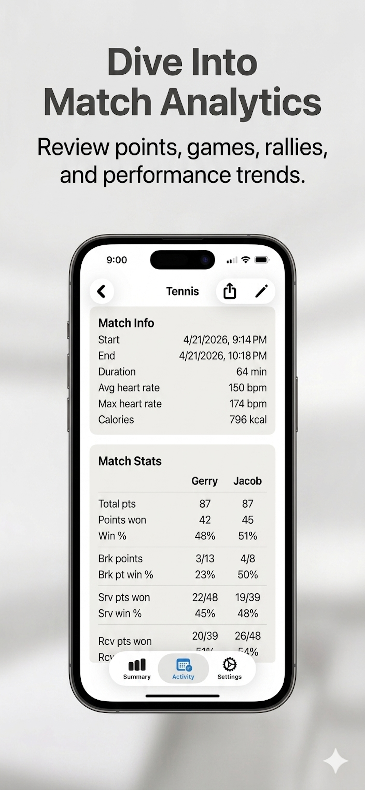
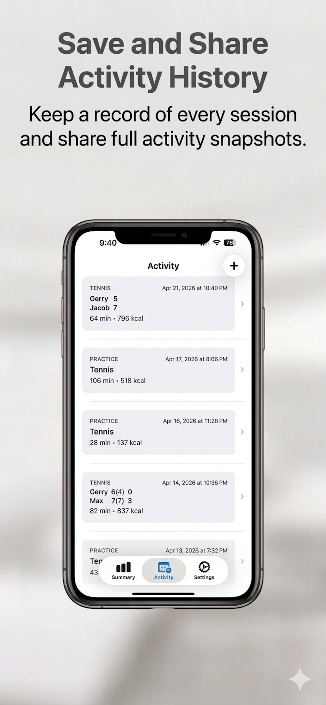
SporTrax is listed on the App Store as collecting no data from this app. Your match and practice tracking stays focused on your play, not your personal information.